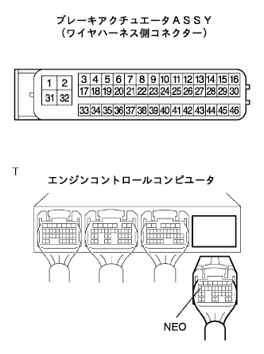
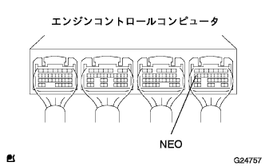
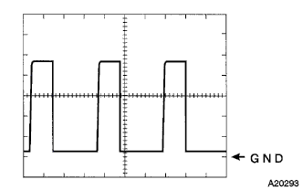

DTC C1224/44 Engine rotation signal system abnormalities |
| DTC No. | DTC detection conditions | DTC output -related items |
|---|---|---|
| C1224/44 |
|
|
| Step 1 | Wire harness inspection |
|  |
Brake actuator ASSY and engine controlled compilation connector is separated.
Inspect that there is no deformation and corrosion in the case and terminals of the connector.
Use a Toyota Electrical Tester to check the insulation between the d17 (neo) terminal between the 10 (neo) terminals of the brake actuator asser Asset Assema ← → the engine control compilation compilation and the insulation with the body earth.
|
| ||||
| OK | |
| Step 2 | Engine control computer inspection (NEO) |
|  |
Use an oscilloscope to check the waveform between the D17 (NEO) ← → GND terminal of the engine control computer.
|  |
Osciroscope waveform
|
| ||||
| OK | |
| Step 3 | DTC reconfirmation |
After deleting the diagnostic cord, re -output.
| A | normal |
| B | Abnormal code |
|
| ||||
| A | ||
| ||